Your scientists were so preoccupied with whether or not they could,
they didn’t stop to think if they should.
- Dr. Ian Malcolm (Jeff Goldblum), Jurrasic Park
I find that having a ridiculous end point is a great way to learn a new skill.
Kind of like dicing up your vegetables and hiding them in the spag bog.
You’re doing something good, but it doesn’t feel like hard work.
That is where the mission of making a geographically accurate Catan board started for me.
What started as a foire into learning geospatial data, turned into a full-blown mission: blood, sweat and tears.
This is my journey of creating CATANberra1, a geographically accurate version of Australia as a Catan board - entirely with R2.
Part I: What is Catan
Catan is a multiplayer strategy game.
It is played on a board of hex tiles,
Each tile represents a resource: wool, grain, lumber, ore, brick, and desert.
Players take turns gathering resources and building settlements, cities and roads.
Settlements and cities generates resources which can be used to build more infrastructure,
Typically played on a standard hexagon of 19 hexes.
But what would it look like if it was shaped like Australia, with each hex representing a geographically accurate resource?
Let’s find out.
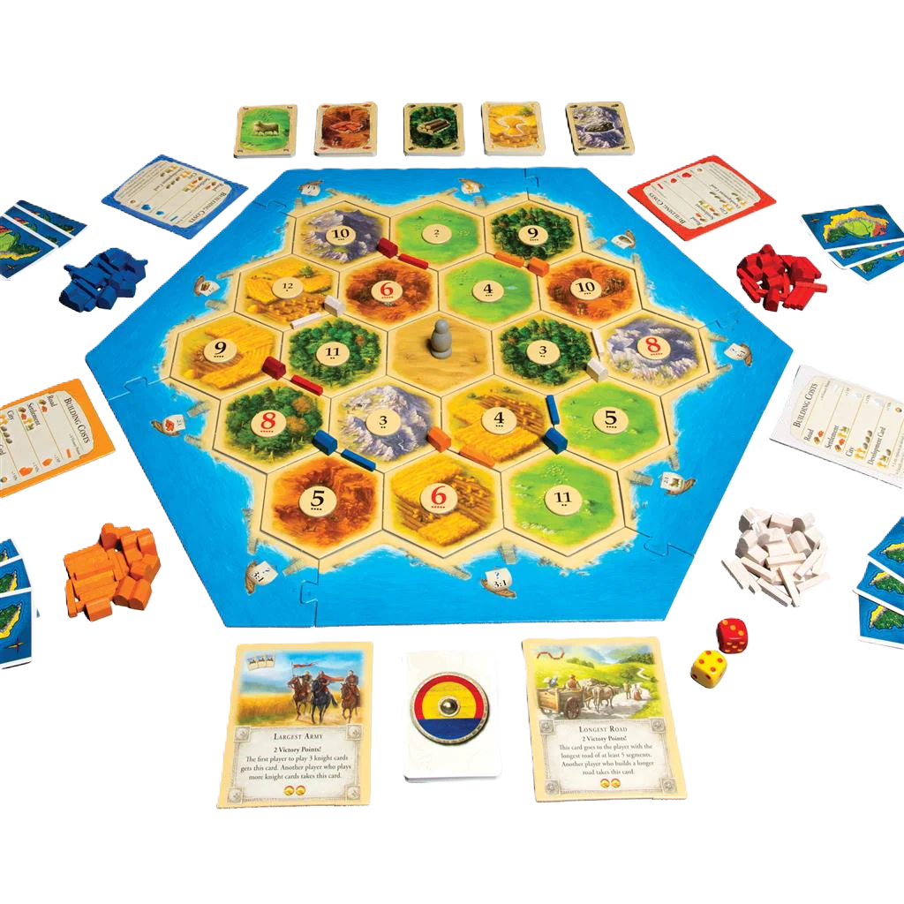
Part II: The geographic grounding
The Department of Agriculture Fisheries and Forestry (ABARES) very politely publishes land use data mapped at a national scale.3
It is a very colourful representation of what land is used for what purpose in Australia, all based on ️satellite images
The 18-class classification processes assigns land to one of 18 unique land uses., known as CL18.
Australia is big.
But a lot of this space is made up of things like Grazing native vegetation, Nature conservations, Managed resource protection, and Other minimal use
Infact, 43.3% of Australia is made up of Grazing native vegetation.
We also see more industrial industry, like Dryland cropping, Production native forests and Grazing modified pastures
Despite Australia being well known for its mining, it actually takes up a relatively small part of its land use (only 0.09% of land use).
See if you can see the very small coloured Mining and waste tiles in the Pilbara.
(Hint: have a look near the Urban intensive uses – the towns)
We also have healthy sprinklings of Water, nice.
These land uses must be sorted into the relevant Catan tiles.
The Catan tiles are:
🐑 Wool
🌾 Grain
🌲 Lumber
⛰️ Ore
🧱 Brick
🌵 Desert
Some of these categories line up nicely.
Grazing native vegetation is great for 🐑
Irrigated cropping, and Dryland cropping is great for 🌾
Production native forests, Plantation forests and Nature conservations can be 🌲
Mining and waste is quite clearly ⛰️
Water is probably the most likely place to get mud to make some 🧱
And anything that is Other minimal use (aka woop-woop) can be considered our 🌵
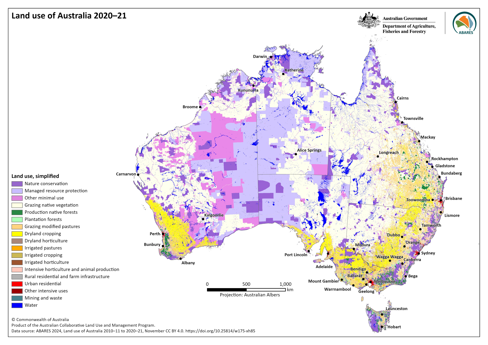
Here are the the final categorisations I landed on:
Importantly, I decided that Managed resource protection could mean a lot of things.
So I decided to assign it at random.
Here is the code:
Because our resource allocations are a little varying, I decided this ‘randomness’ should favour more scarce resources.
Take note of the weightings for resources like ⛰️ Ore and 🧱 Brick.
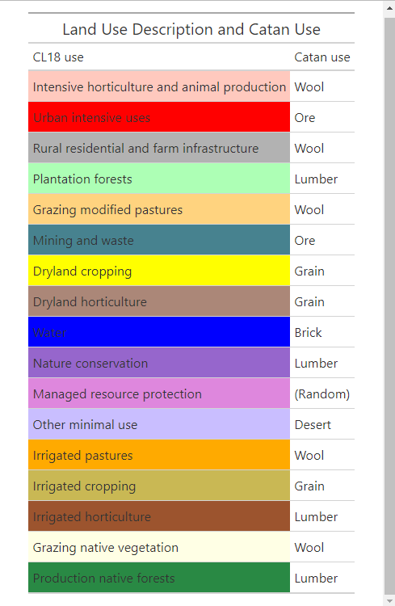
randomise_land_use <-function(df) {# Set weights and land use types land_use_weights <-c(Desert =0.2, Brick =0.35, Lumber =0.1, Ore =0.35)# Randomize land use for rows where land_use_descrip is "Managed resource protection" df$catan_use <-ifelse( df$land_use_descrip =="Managed resource protection",sample(names(land_use_weights),sum(df$land_use_descrip =="Managed resource protection"),prob = land_use_weights ), df$catan_use )return(df)}
Part III: A brief raster diversion
A quick chat on rasters.
A raster is the result of capturing land area into associated coloured pixels.
Each individual cell represents a certain area.
We are using the Land use of Australia 2010–11 to 2015-16,250m.
A resolution of 250m means each pixel (cell) represents 250m x 250m.
This Australian raster is 18633 x 15669 pixels
That’s 291,960,477 pixels
This is way, way too big for my computer to handle in R.
R purists… now is the time to look away.
I used some QGIS magic to resampled the data to 10km.
I don’t quite know the implications of this, but less pixels = easier.
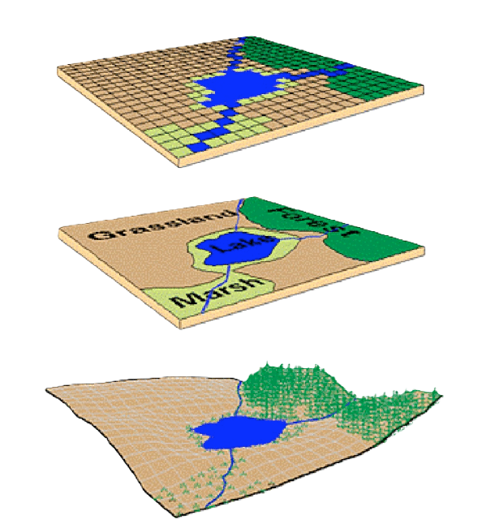
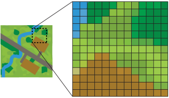
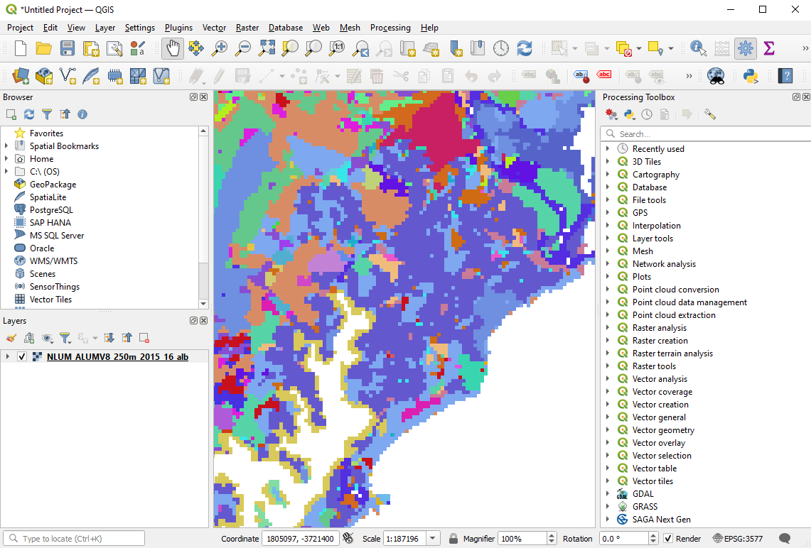
Part IV: Ok we’re finally getting there
Alright, now to start building up the map.
First we load in the raster.
We’re basically representing each pixel as a point (just under 80,000 points).
Hence why my computer probably didn’t like the 250m version. That was a lot of points!
Next, we divide Australia into equally sized hexes
You can pick whatever size, which we’ll play with later.
I filter out the Bass Strait hexes.
Sorry to any residents of Flinders, Kent or King Island.
We’ll determine the hex allocation by calculating the most predominant land use within it.
From this we can assign the CL18 land use classification
Next, we have our simplified land use map.
We can now remove the individual points, and free up some RAM…
Now we apply our Catan classifications, and colours
Reminder, these these are:
🐑 Wool 🌾 Grain 🌲 Lumber ⛰️ Ore 🧱 Brick 🌵️ Desert
And throw in some tile icons for a bit of pizzazz and to make it easier to track
And there we have it!
Astute readers might have noticed a key element of Catan missing…
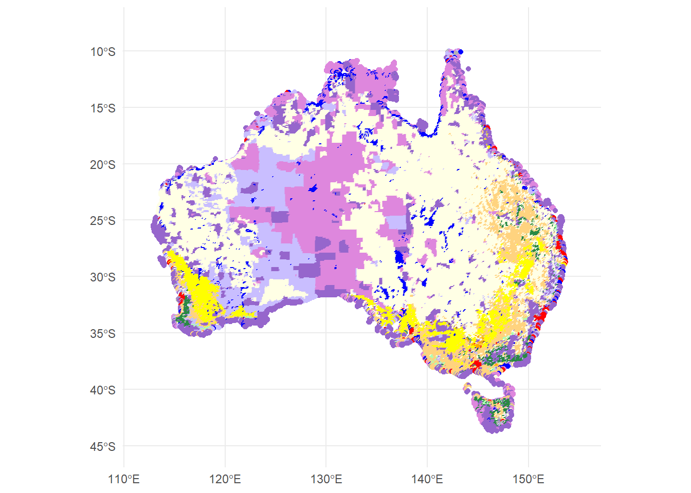
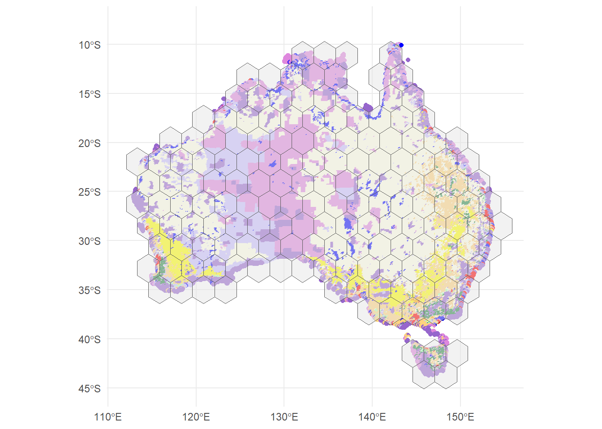
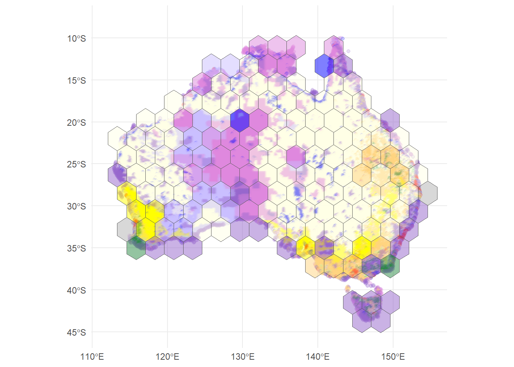
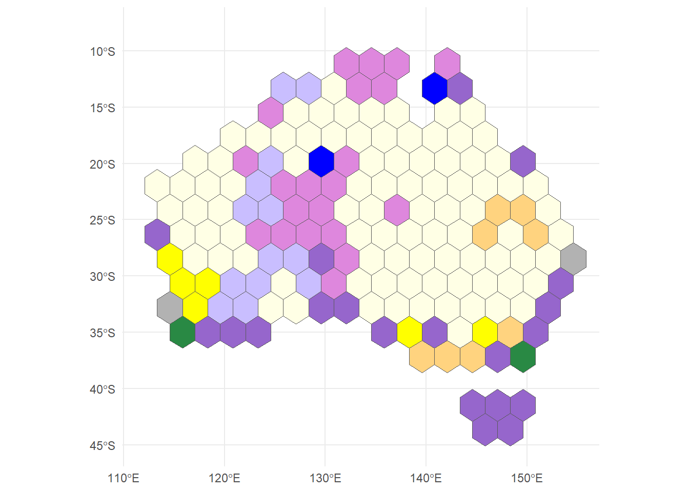
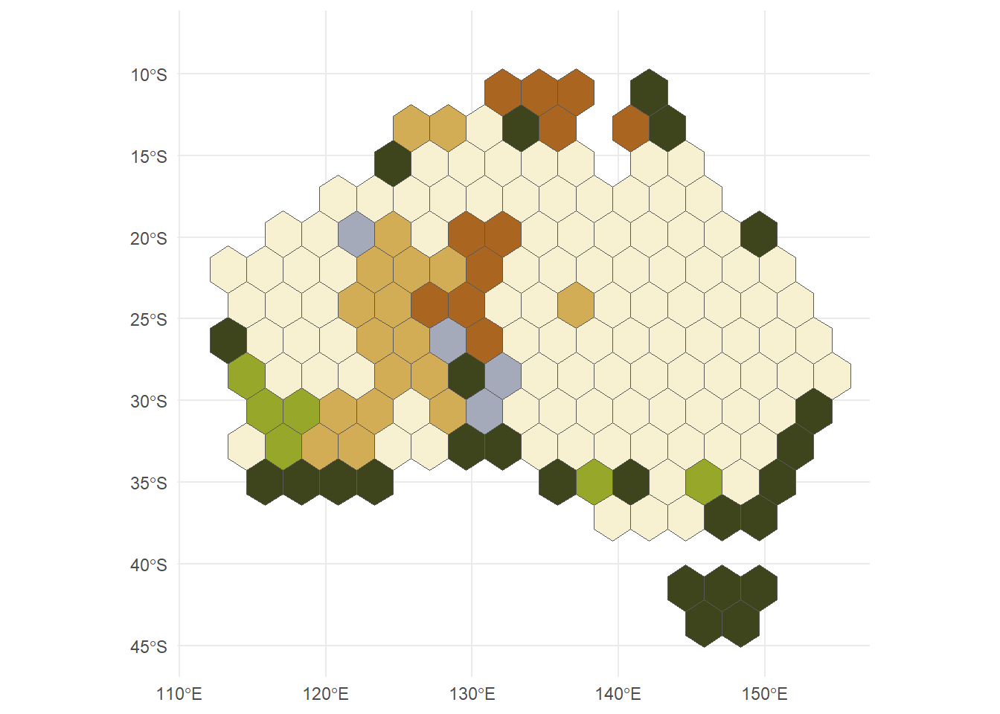
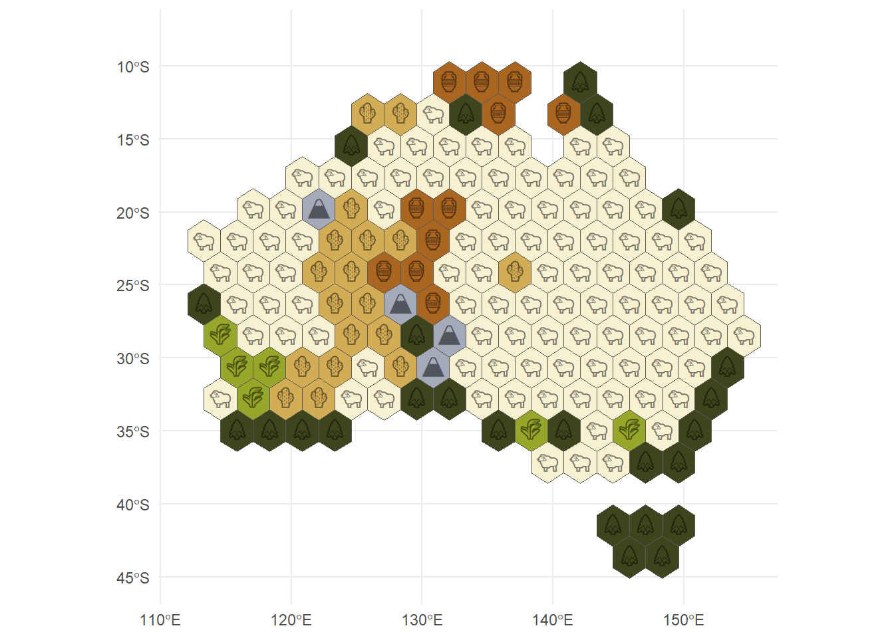
cities = [ { name:"Port of Hedland",lat:-20,lon:118.625 }, { name:"Port of Brisbane",lat:-27.3867,lon:153.1693 }, { name:"Port of Fremantle",lat:-32.0556,lon:115.7439 }, { name:"Port of Adelaide",lat:-34.7983,lon:138.4911 }, { name:"Port of Darwin",lat:-12.4634,lon:130.8456 }, { name:"Port of Newcastle",lat:-32.9265,lon:151.7804 }, { name:"Port of Townsville",lat:-19.2564,lon:146.8233 }, { name:"Port of Gladstone",lat:-23.8431,lon:151.2519 }, { name:"Port of Hobart",lat:-42.88333,lon:147.36667 }]
world =FileAttachment("data/naturalearth-land-110m.geojson").json()
Add some polishing touches, and you’ve got yourself a playable board!
Like I mentioned, changing the hex sizes you can scale the board size from mega, to tiny!
Thanks for taking the time to read!
If you have any tips on how I could have done this better, or any other unique ideas feel free to reach me @BCochraneR on X, or @bencochrane.bsky.social
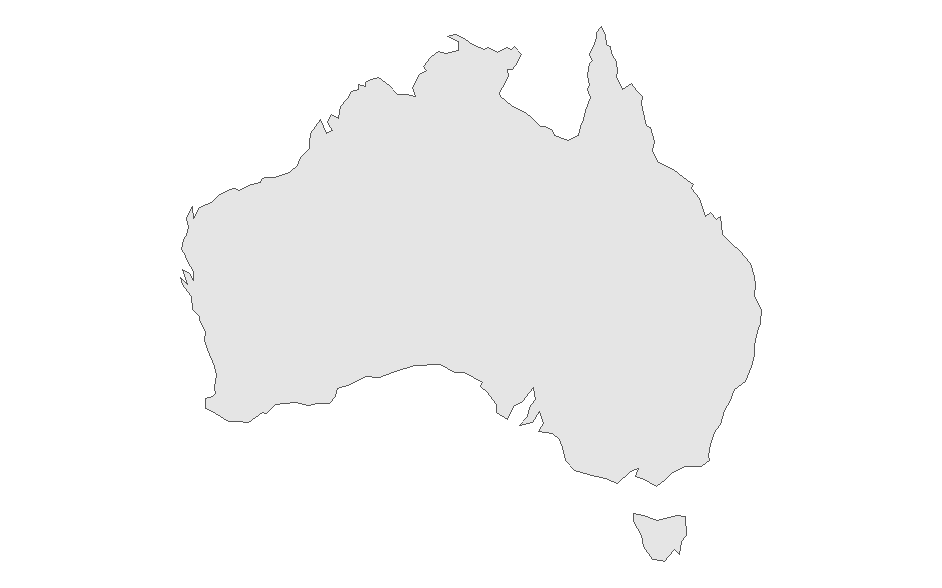
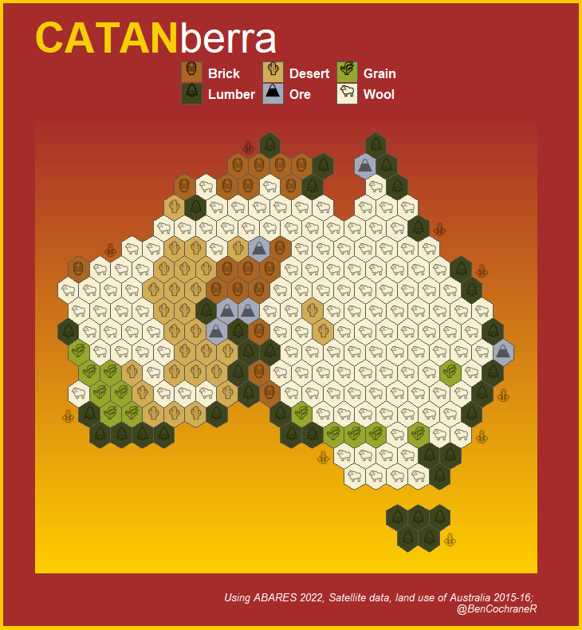
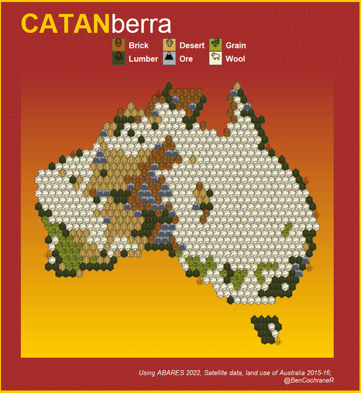
Footnotes
The name CATANberra is a reference to the capital of Australia, Canberra.↩︎
Ok maybe not entirely, there was a bit of QGIS as the start, that doesn’t count.↩︎
ABARES 2024, Land use of Australia 2010–11 to 2020–21, Australian Bureau of Agricultural and Resource Economics and Sciences, Canberra, October, CC BY 4.0. DOI: 10.25814/w175-xh85↩︎